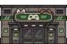
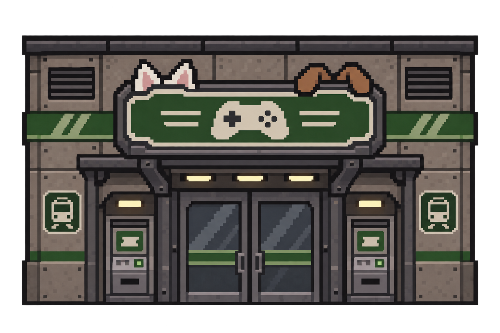
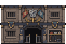
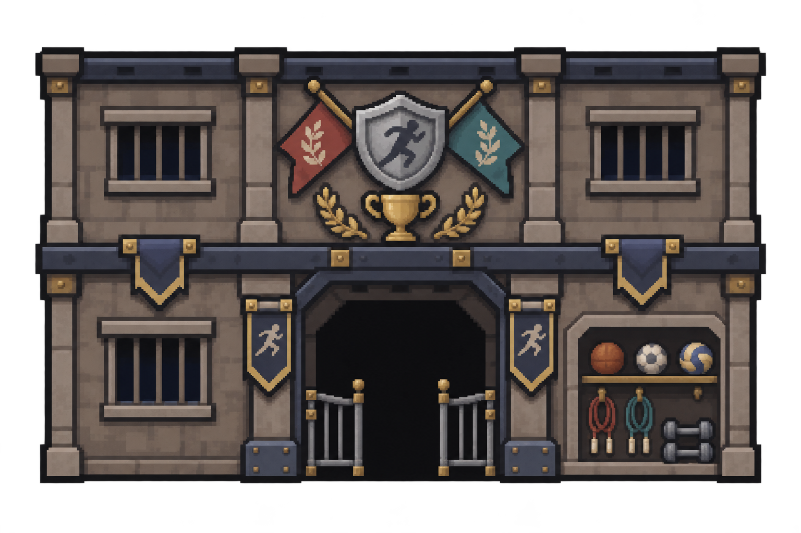
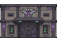
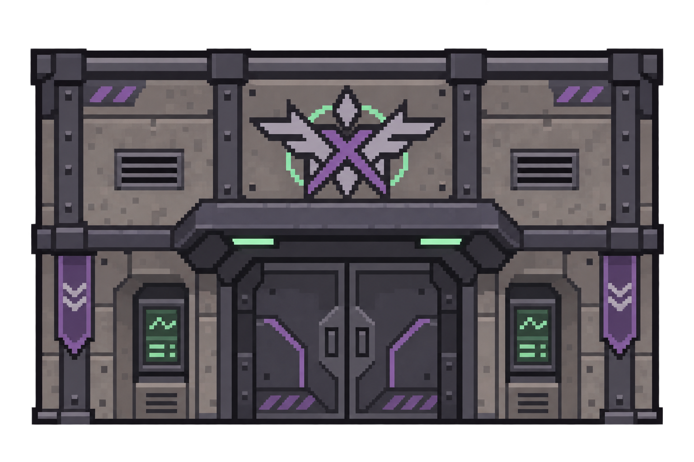

잔향도시 4~7층 · 기수별 시설 기본 도트 · 첫 3종
노후화 전 기본 디자인입니다. 게이머즈 역과 3기생 운동시설은 홀로도리 시설 주제를 참고한 독자 디자인이며, holoX 비밀기지는 우리 쪽 각색입니다. 공식 건물 외형을 그대로 옮긴 것은 아닙니다. 아래는 실제 96×64 도트입니다.
1. 게이머즈 역
게임패드 간판 · 귀 장식 · 승차권 단말기

실제 크기 · 가로 3칸
보관 원화 보기

2. 3기생 운동시설
깃발과 트로피 · 운동기구 · 출입 게이트

실제 크기 · 가로 3칸
보관 원화 보기

3. holoX 비밀기지
보라색 문양 · 밀폐 철문 · 녹색 모니터

실제 크기 · 가로 3칸
보관 원화 보기

상점용 벽면 안에 맞춘 모습
가게 전면과 벽면 높이를 함께 2칸으로 맞췄습니다. 왼쪽부터 게이머즈 역·운동시설·비밀기지. 캐릭터는 기존 32픽셀 크기입니다.